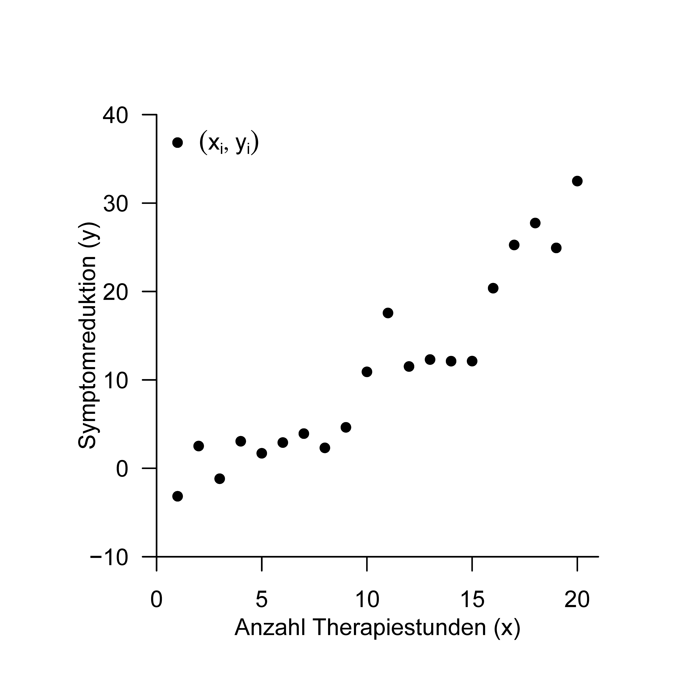
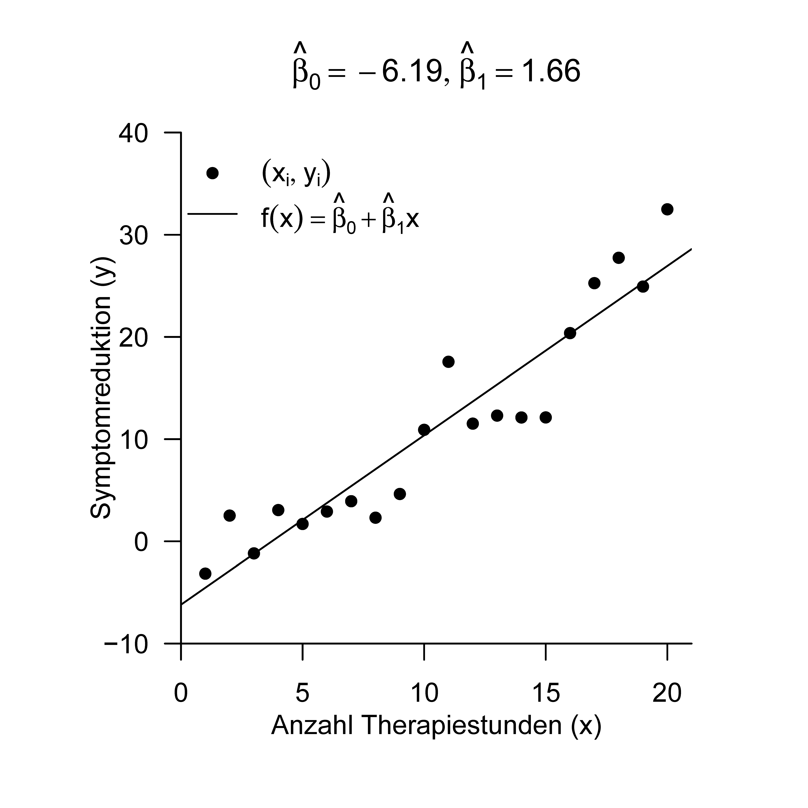

Fundamentales Ziel von Regressionsanalysen ist es, Beziehungen zwischen unabhängigen und abhängigen Variablen zu modellieren. Ein zentrales Thema dabei ist die Anpassung von Funktionen an beobachtete Datensätze. Mit dem Begriff der Ausgleichsgerade im Rahmen der Methode der kleinsten Quadrate und dem Begriff der einfachen linearen Regression wollen wir uns in diesem Abschnitt diesen zentralen Themen der probabilistischen Datenmodellierung schrittweise nähern. Dabei unterscheiden sich die Konzepte von Ausgleichsgerade und einfacher lineare Regression in einem zentralem Aspekt: bei der Ausgleichsgerade werden unabhängige und abhängige Variable nicht als Zufallsvariablen modelliert, im Rahmen der einfachen linearen Regression nimmt die abhängige Variable dann die Form einer Zufallsvariablen an. Im Kontext der Korrelation schließlich werden sowohl abhängige als auch unabhängige Variable als Zufallsvariablen modelliert.
Um die Konzepte dieses Abschnittes zu verdeutlichen, betrachten wir einen Beispieldatensatz in dem die Anzahl an Psychotherapiestunden als unabhängige Variable \(x\) der Symptomreduktion einer Gruppe von \(n=20\) Patient:innen als abhängige Variable \(y\) gegenüber gestellt wird (Abbildung 25.1). Die visuelle Inspektion dieses Datensatzes legt nahe, dass ein Mehr an Therapiestunden ein Mehr an Symptomreduktion impliziert. Ziel der Methode der kleinsten Quadrate und der einfachen linearen Regression ist es, diesen intuitiven funktionalen Zusammenhang zwischen unabhängiger und abhängiger Variable auf eine quantitative Basis zu stellen.

Abbildung 25.1: Beispieldatensatz.
25.1 Methode der kleinsten Quadrate
Wir definieren zunächst den Begriff der Ausgleichsgerade.
Definition 25.1 (Ausgleichsgerade) Für \(\beta:=\left(\beta_{0}, \beta_{1}\right)^{T} \in \mathbb{R}^{2}\) heißt die linear-affine Funktion \[\begin{equation}
f_{\beta}: \mathbb{R} \rightarrow \mathbb{R}, x \mapsto f_{\beta}(x):=\beta_{0}+\beta_{1} x
\end{equation}\] für die für einen Datensatz \(\left\{\left(x_{1}, y_{1}\right), \ldots,\left(x_{n}, y_{n}\right)\right\} \subset \mathbb{R}^{2}\) die Funktion \[\begin{equation}
q: \mathbb{R}^{2} \rightarrow \mathbb{R}_{\geq 0}, \beta \mapsto q(\beta):=\sum_{i=1}^{n}\left(y_{i}-f_{\beta}\left(x_{i}\right)\right)^{2}=\sum_{i=1}^{n}\left(y_{i}-\left(\beta_{0}+\beta_{1} x_{i}\right)\right)^{2}
\end{equation}\] der quadrierten vertikalen Abweichungen der \(y_{i}\) von den Funktionswerten \(f_{\beta}\left(x_{i}\right)\) ihr Minimum annimt, Ausgleichsgerade für den Datensatz \(\left\{\left(x_{1}, y_{1}\right), \ldots,\left(x_{n}, y_{n}\right)\right\}\).
Bei der Ausgleichsgerade handelt es sich also um eine linear-affine Funktion der Form \[\begin{equation}
f_{\beta}: \mathbb{R} \rightarrow \mathbb{R}, x \mapsto f_{\beta}(x):=\beta_{0}+\beta_{1} x
\end{equation}\]Abbildung 25.2 zeigt drei durch jeweils andere Werte von \(\beta_{0}\) und \(\beta_{1}\) parameterisierte linearaffine Funktionen zusammen mit der Wertemenge des Beispieldatensatzes.
Wie bei allen linear-affinen Funktionen entspricht bei \(f_{\beta}\) der Wert von \(\beta_{0}\) dem Wert, den \(f_{\beta}\) für \(x=0\) annimmt, \[\begin{equation}
f_{\beta}(0)=\beta_{0}+\beta_{1} \cdot 0=\beta_{0}
\end{equation}\] und damit graphisch dem Schnittpunkt des Funktionsgraphen mit der \(y\)-Achse. Da \(\beta_{0}\) damit dem Versatz (engl. offset) des Funktionsgraphen von \(y=0\) an der Stelle \(x=0\) entspricht, nennt man \(\beta_{0}\) auch häufig den Offsetparameter. Analog entspricht wie bei allen linear-affinen Funktionen der Wert von \(\beta_{1}\) dem Wert der Funktionswertdifferenz pro Argumenteinheitsdifferenz. Beispielsweise gilt etwa für \(\beta_{0}=5\) und \(\beta_{1}=0.5\), dass \[\begin{equation}
\begin{aligned}
& f_{\beta}(2)-f_{\beta}(1)=(5+0.5 \cdot 2)-(5+0.5 \cdot 1)=1-0.5=0.5 \\
& f_{\beta}(9)-f_{\beta}(8)=(5+0.5 \cdot 9)-(5+0.5 \cdot 8)=9.5-8=0.5
\end{aligned}
\end{equation}\] Für eine Argumentdifferenz von 1 ergibt sich also eine Funktionswertdifferenz von 0.5. \(\beta_{1}\) enkodiert also die Stärke der Änderung der Funktionswerte pro Argumentseinheitsdifferenz und damit die Steigung (engl. slope) des Graphen der linear-affinen Funktion. Entsprechend wird \(\beta_{1}\)Steigungsparameter oder Slopeparameter genannt.
Nach Definition ist die Ausgleichsgerade nun allerdings nicht eine beliebige linearaffine Funktion der Form \(f_{\beta}\), sondern eben jene, die für einen gegebenen Datensatze \(\left\{\left(x_{1}, y_{1}\right), \ldots,\left(x_{n}, y_{n}\right)\right\}\) die Summe der quadrierten vertikalen Abweichnungen \[\begin{equation}
q(\beta):=\sum_{i=1}^{n}\left(y_{i}-\left(\beta_{0}+\beta_{1} x_{i}\right)\right)^{2}
\end{equation}\] minimiert. Für eine fest vorgegebenen Datensatz von \(\left(x_{i}, y_{i}\right)\) Paaren ist der Wert dieser Summe abhängig von den Werten von \(\beta_{0}\) und \(\beta_{1}\) und kann deshalb durch Wahl geeigneter
Abbildung 25.2: Linear-affine Funktionen mit unterschiedlichen Parameterwerten vor dem Hintegrund des Beispieldatensatzes.
Werte von \(\beta_{0}\) und \(\beta_{1}\) minimiert werden. Da hierbei eine Summe von quadrierten Abweichungen zwischen Datenpunkten und Werten der Ausgleichsgerade minimiert wird, spricht man auch oft etwas ungenau von der Methode der kleinsten Quadrate (engl. method of least squares). Abbildung 1.3 zeigt die vertikalen Abweichungen zwischen \(y_{i}\) und \(\beta_{0}+\beta_{1} x_{i}\) für \(i=1, \ldots, n\) des Beispieldatensatzes als orange Linien sowie die Summe ihrer Quadrate \(q(\beta)\) im Titel. Für die Parameterwerte \(\beta_{0}=-6.2\) und \(\beta_{1}=1.7\) (vgl. Abbildung 25.2) immt diese Summe ihren kleinsten Wert an.
Abbildung 25.3: Vertikale Abweichungen und Quadratsummen bei unterschiedlichen Parameterwerten.
Konkrete Formeln zur Bestimmung der Parameterwerte der Ausgleichsgerade stellt Theorem 25.1 bereit.
Theorem 25.1 (Ausgleichsgerade) Für einen Datensatz \(\left\{\left(x_{1}, y_{1}\right), \ldots,\left(x_{n}, y_{n}\right)\right\} \subset \mathbb{R}^{2}\) hat die Ausgleichsgerade die Form \[\begin{equation}
f_{\beta}: \mathbb{R} \rightarrow \mathbb{R}, x \mapsto f_{\beta}(x):=\hat{\beta}_{0}+\hat{\beta}_{1} x
\end{equation}\] wobei mit der Stichprobenkovarianz \(c_{x y}\) der \(\left(x_{i}, y_{i}\right)\)-Werte, der Stichprobenvarianz \(s_{x}^{2}\) der \(x_{i}\)-Werte und den Stichprobenmitteln \(\bar{x}\) und \(\bar{y}\) der \(x_{i}\) - und \(y_{i}\)-Werte, respektive, gilt, dass \[\begin{equation}
\hat{\beta}_{1}=\frac{c_{x y}}{s_{x}^{2}} \text { und } \hat{\beta}_{0}=\bar{y}-\hat{\beta}_{1} \bar{x} \text {. }
\end{equation}\]
Beweis. Wir betrachten die Summe der quadrierten vertikalen Abweichungen der \(y_{i}\) von den Funktionswerten \(f\left(x_{i}\right)\) als Funktion von \(\beta_{0}\) und \(\beta_{1}\) und bestimmen Werte \(\hat{\beta}_{0}\) und \(\hat{\beta}_{1}\), für die diese Funktion ihr Minimum annimmt, die Summe der quadrierten vertikalen Abweichungen der \(y_{i}\) von den Funktionswerten \(f\left(x_{i}\right)\) also minimal wird. Wir betrachten die Funktion \[\begin{equation}
q: \mathbb{R}^{2} \rightarrow \mathbb{R},\left(\beta_{0}, \beta_{1}\right) \mapsto q\left(\beta_{0}, \beta_{1}\right):=\sum_{i=1}^{n}\left(y_{i}-\left(\beta_{0}+\beta_{1} x\right)\right)^{2}
\end{equation}\] Um das Minimum dieser Funktion zu bestimmen, berechnen wir zunächst die partiellen Ableitungen hinsichtlich \(\beta_{0}\) und \(\beta_{1}\) und setzen diese gleich 0. Es ergibt sich zunächst \[\begin{equation}
\begin{aligned}
\frac{\partial}{\partial \beta_{0}} q\left(\beta_{0}, \beta_{1}\right) & =\frac{\partial}{\partial \beta_{0}}\left(\sum_{i=1}^{n}\left(y_{i}-\left(\beta_{0}+\beta_{1} x_{i}\right)\right)^{2}\right) \\
& =\sum_{i=1}^{n} \frac{\partial}{\partial \beta_{0}}\left(y_{i}-\left(\beta_{0}+\beta_{1} x_{i}\right)\right)^{2} \\
& =\sum_{i=1}^{n} 2\left(y_{i}-\left(\beta_{0}+\beta_{1} x_{i}\right)\right) \frac{\partial}{\partial \beta_{0}}\left(y_{i}-\beta_{0}-\beta_{1} x_{i}\right) \\
& =-2 \sum_{i=1}^{n}\left(y_{i}-\beta_{0}-\beta_{1} x_{i}\right) .
\end{aligned}
\end{equation}\] Weiterhin ergibt sich \[\begin{equation}
\begin{aligned}
\frac{\partial}{\partial \beta_{1}} q\left(\beta_{0}, \beta_{1}\right) & =\frac{\partial}{\partial \beta_{1}}\left(\sum_{i=1}^{n}\left(y_{i}-\left(\beta_{0}+\beta_{1} x_{i}\right)\right)^{2}\right) \\
& =\sum_{i=1}^{n} \frac{\partial}{\partial \beta_{1}}\left(y_{i}-\left(\beta_{0}+\beta_{1} x_{i}\right)\right)^{2} \\
& =\sum_{i=1}^{n} 2\left(y_{i}-\left(\beta_{0}+\beta_{1} x_{i}\right)\right) \frac{\partial}{\partial \beta_{1}}\left(y_{i}-\beta_{0}-\beta_{1} x_{i}\right) \\
& =-2 \sum_{i=1}^{n}\left(y_{i}-\beta_{0}-\beta_{1} x_{i}\right) x_{i} .
\end{aligned}
\end{equation}\] Nullsetzen beider partieller Ableitungen ergibt dann \[\begin{equation}
\begin{aligned}
\frac{\partial}{\partial \beta_{0}} q\left(\beta_{0}, \beta_{1}\right) & =0 \text { und } \frac{\partial}{\partial \beta_{1}} q\left(\beta_{0}, \beta_{1}\right)=0 \\
\Leftrightarrow-2 \sum_{i=1}^{n}\left(y_{i}-\beta_{0}-\beta_{1} x_{i}\right) & =0 \text { und }-2 \sum_{i=1}^{n}\left(y_{i}-\beta_{0}-\beta_{1} x_{i}\right) x_{i}=0 \\
\Leftrightarrow \sum_{i=1}^{n}\left(y_{i}-\beta_{0}-\beta_{1} x_{i}\right) & =0 \text { und } \sum_{i=1}^{n}\left(y_{i}-\beta_{0}-\beta_{1} x_{i}\right) x_{i}=0
\end{aligned}
\end{equation}\] und weiter \[\begin{equation}
\begin{gathered}
\sum_{i=1}^{n} y_{i}-\sum_{i=1}^{n} \beta_{0}-\beta_{1} \sum_{i=1}^{n} x_{i}=0 \text { und } \sum_{i=1}^{n} y_{i} x_{i}-\sum_{i=1}^{n} \beta_{0} x_{i}-\beta_{1} \sum_{i=1}^{n} x_{i}^{2}=0 \\
\Leftrightarrow \beta_{0} n+\beta_{1} \sum_{i=1}^{n} x_{i}=\sum_{i=1}^{n} y_{i} \text { und } \beta_{0} \sum_{i=1}^{n} x_{i}+\beta_{1} \sum_{i=1}^{n} x_{i}^{2}=\sum_{i=1}^{n} y_{i} x_{i}
\end{gathered}
\end{equation}\] Das sich hier ergebende Gleichungssystem \[\begin{equation}
\begin{aligned}
\beta_{0} n+\beta_{1} \sum_{i=1}^{n} x_{i} & =\sum_{i=1}^{n} y_{i} \\
\beta_{0} \sum_{i=1}^{n} x_{i}+\beta_{1} \sum_{i=1}^{n} x_{i}^{2} & =\sum_{i=1}^{n} y_{i} x_{i}
\end{aligned}
\end{equation}\] wird System der Normalengleichungen genannt und beschreibt die notwendige Bedingung für ein Minimum von \(q\). Aufösen dieses Gleichungssystems nach \(\beta_{0}\) und \(\beta_{1}\) liefert dann die Werte \(\hat{\beta}_{0}\) und \(\hat{\beta}_{1}\) des Theorems. Um dies zu sehen, halten wir zunächst fest, dass mit der ersten Gleichung des Systems der Normalengleichungen gilt \[\begin{equation}
n \hat{\beta}_{0}+\hat{\beta}_{1} \sum_{i=1}^{n} x_{i}=\sum_{i=1}^{n} y_{i} \Leftrightarrow \hat{\beta}_{0}+\hat{\beta}_{1} \bar{x}=\bar{y} \Leftrightarrow \hat{\beta}_{0}=\bar{y}-\hat{\beta}_{1} \bar{x}
\end{equation}\] Einsetzen der Form von \(\hat{\beta}_{0}\) in die zweite Gleichung des Systems der Normalengleichungen ergibt dann zunächst \[\begin{equation}
\begin{aligned}
\hat{\beta}_{0} \sum_{i=1}^{n} x_{i}+\hat{\beta}_{1} \sum_{i=1}^{n} x_{i}^{2} & =\sum_{i=1}^{n} y_{i} x_{i} \\
\Leftrightarrow\left(\bar{y}-\hat{\beta}_{1} \bar{x}\right) \sum_{i=1}^{n} x_{i}+\hat{\beta}_{1} \sum_{i=1}^{n} x_{i}^{2} & =\sum_{i=1}^{n} y_{i} x_{i} \\
\Leftrightarrow \bar{y} \sum_{i=1}^{n} x_{i}-\hat{\beta}_{1} \bar{x} \sum_{i=1}^{n} x_{i}+\hat{\beta}_{1} \sum_{i=1}^{n} x_{i}^{2} & =\sum_{i=1}^{n} y_{i} x_{i} \\
\Leftrightarrow-\hat{\beta}_{1} \bar{x} \sum_{i=1}^{n} x_{i}+\hat{\beta}_{1} \sum_{i=1}^{n} x_{i}^{2} & =\sum_{i=1}^{n} y_{i} x_{i}-\bar{y} \sum_{i=1}^{n} x_{i} \\
\Leftrightarrow \hat{\beta}_{1}\left(\sum_{i=1}^{n} x_{i}^{2}-\bar{x} \sum_{i=1}^{n} x_{i}\right) & =\sum_{i=1}^{n} y_{i} x_{i}-\bar{y} \sum_{i=1}^{n} x_{i} .
\end{aligned}
\end{equation}\] Wir halten nun zunächst fest, dass gilt \[\begin{equation}
\begin{aligned}
\sum_{i=1}^{n} x_{i}^{2}-\bar{x} \sum_{i=1}^{n} x_{i} & =\sum_{i=1}^{n} x_{i}^{2}-2 \bar{x} \sum_{i=1}^{n} x_{i}+\bar{x} \sum_{i=1}^{n} x_{i} \\
& =\sum_{i=1}^{n} x_{i}^{2}-2 \bar{x} \sum_{i=1}^{n} x_{i}+n\left(\frac{1}{n} \sum_{i=1}^{n} x_{i}\right) \bar{x} \\
& =\sum_{i=1}^{n} x_{i}^{2}-2 \bar{x} \sum_{i=1}^{n} x_{i}+n \bar{x}^{2} \\
& =\sum_{i=1}^{n}\left(x_{i}^{2}-2 \bar{x} x_{i}+\bar{x}^{2}\right) \\
& =\sum_{i=1}^{n}\left(x_{i}-\bar{x}\right)^{2}
\end{aligned}
\end{equation}\] Weiterhin halten wir zunächst fest, dass gilt \[\begin{equation}
\begin{aligned}
\sum_{i=1}^{n} y_{i} x_{i}-\bar{y} \sum_{i=1}^{n} x_{i} & =\sum_{i=1}^{n} y_{i} x_{i}-\bar{y} \sum_{i=1}^{n} x_{i}-n \bar{y} \bar{x}+n \bar{y} \bar{x} \\
& =\sum_{i=1}^{n} y_{i} x_{i}-\bar{y} \sum_{i=1}^{n} x_{i}-\sum_{i=1}^{n} y_{i} \bar{x}+\sum_{i=1}^{n} \bar{y} \bar{x} \\
& =\sum_{i=1}^{n} y_{i} x_{i}-\sum_{i=1}^{n} y_{i} \bar{x}-\sum_{i=1}^{n} \bar{y} x_{i}+\sum_{i=1}^{n} \bar{y} \bar{x} \\
& =\sum_{i=1}^{n}\left(y_{i} x_{i}-y_{i} \bar{x}-\bar{y} x_{i}+\bar{y} \bar{x}\right) \\
& =\sum_{i=1}^{n}\left(y_{i}-\bar{y}\right)\left(x_{i}-\bar{x}\right) .
\end{aligned}
\end{equation}\] In der Fortsetzung von (1.16) ergibt sich dann \[\begin{equation}
\begin{aligned}
\hat{\beta}_{1}\left(\sum_{i=1}^{n} x_{i}^{2}-\bar{x} \sum_{i=1}^{n} x_{i}\right) & =\sum_{i=1}^{n} y_{i} x_{i}-\bar{y} \sum_{i=1}^{n} x_{i} \\
\Leftrightarrow \hat{\beta}_{1}\left(\sum_{i=1}^{n}\left(x_{i}-\bar{x}\right)^{2}\right) & =\sum_{i=1}^{n}\left(y_{i}-\bar{y}\right)\left(x_{i}-\bar{x}\right) \\
\Leftrightarrow \hat{\beta}_{1} & =\frac{\sum_{i=1}^{n}\left(y_{i}-\bar{y}\right)\left(x_{i}-\bar{x}\right)}{\sum_{i=1}^{n}\left(x_{i}-\bar{x}\right)^{2}} \\
\Leftrightarrow \hat{\beta}_{1} & =\frac{c_{x y}}{s_{x}^{2}} .
\end{aligned}
\end{equation}\]
Theorem 25.1 besagt, dass die Parameterwerte, die für einen gegebenen Datensatz \(\left\{\left(x_{1}, y_{1}\right), \ldots,\left(x_{n}, y_{n}\right)\right\}\) die Summe der quadrierten vertikalen Abweichungen für eine linear-affine Funktion minimieren mithilfe der Stichprobenmittel der \(x_{i^{-}}\)und \(y_{i}\)-Werte, der Stichprobenvarianz der \(x_{i}\)-Werte und der Stichprobenkovarianz der \(x_{i}\) - und \(y_{i}\)-Werte berechnet werden können. Die Terminologie orientiert sich hier an den Begrifflichkeiten der deskriptiven Statistik, insbesondere werden die \(x_{i}\)-Werte häufig nicht als Realisationen von Zufallsvariablen verstanden, der Begriff der Stichprobe wird jedoch trotzdem verwendet. Aus der Anwendungsperspektive können nach Theorem 25.1 die Parameter der Ausgleichsgerade also mithilfe der bekannten Funktionen für die Auswertung deskriptiver Statistiken bestimmt werden. Folgender R Code demonstriert dies.
Die Idee, bei einem gegebenen Datensatz von \(\left(x_{i}, y_{i}\right)\) Paaren die Summe der quadrierten vertikalen Abweichungen zwischen einer Funktion der \(x_{i}\)-Werte und den \(y_{i}\)-Werten zu minimieren und so eine Funktion möglichst gut an eine Wertemenge anzupassen, ist nicht auf linear-affine Funktionen beschränkt. Folgende Definition verallgemeinert die Definition der Ausgleichsgerade auf Polynomfunktionen beliebigen Grades.

Abbildung 25.4: Ausgleichsgerade für den Beispieldatensatz.
Definition 25.2 (Ausgleichspolynom) Für \(\beta:=\left(\beta_{0}, \ldots, \beta_{k}\right)^{T} \in \mathbb{R}^{k+1}\) heißt die Polynomfunktion \(k\) ten Grades \[\begin{equation}
f_{\beta}: \mathbb{R} \rightarrow \mathbb{R}, x \mapsto f_{\beta}(x):=\sum_{i=0}^{k} \beta_{i} x^{i}
\end{equation}\] für die für einen Datensatz \(\left\{\left(x_{1}, y_{1}\right), \ldots,\left(x_{n}, y_{n}\right)\right\} \subset \mathbb{R}^{2}\) die Funktion \[\begin{equation}
q: \mathbb{R}^{k+1} \rightarrow \mathbb{R}_{\geq 0}, \beta \mapsto q(\beta):=\sum_{i=1}^{n}\left(y_{i}-f_{\beta}\left(x_{i}\right)\right)^{2}=\sum_{i=1}^{n}\left(y_{i}-\sum_{i=0}^{k} \beta_{i} x^{i}\right)^{2}
\end{equation}\] der quadrierten vertikalen Abweichungen der \(y_{i}\) von den Funktionswerten \(f_{\beta}\left(x_{i}\right)\) ihr Minimum annimt, das Ausgleichspolynom kten Grades für den Datensatz \(\left\{\left(x_{1}, y_{1}\right), \ldots,\left(x_{n}, y_{n}\right)\right\}\).
Die Ausgleichsgerade ist damit das Ausgleichspolynom ersten Grades. Wir wollen den Begriff des Ausgleichspolynoms hier nicht weiter vertiefen und werden insbesondere die Parameterwerte \(\hat{\beta}_{0}, \ldots, \hat{\beta}_{k}\), für die die Funktion \(q\) ihr Minimum annimt an späterer Stelle im Rahmen der Theorie des Allgemeinen Linearen Modells allgemein bestimmen. In Abbildung 25.5 visualisieren beispielhaft die Ausgleichspolynome ersten bis vierten Grades für den Beispieldatensatz wobei der Wert der Funktion \(q\) an der Minimumsstelle jeweils im Titel vermerkt ist.
Abbildung 25.5: Ausgleichspolynome ersten bis vierten Grades für den Beispieldatensatz.
25.2 Einfache lineare Regression
Eine Ausgleichsgerade erlaubt Aussagen über unbeobachtete der abhängigen Variable. Allerdings erlaubt eine Ausgleichsgerade nur implizite Aussagen über die mit der Anpassung einer linear-affinen Funktion an einen Datensatz verbundene Unsicherheit. In der einfachen linearen Regression wird die Idee einer Ausgleichsgerade um eine probabilistische Komponente erweitert. Die einfache lineare Regression erlaubt damit insbesondere im Sinne der Frequentistischen Inferenz Konfidenzintervalle für die Ausgleichsgeradenparameter anzugeben und Hypothesentests bezüglich der Ausgleichsgeradenparameter durchzuführen. Wir wollen hier zunächst nur das Modell der einfachen linearen Regression und die auf ihm basierende Maximum-Likelihood Schätzung der Ausgleichsgeradenparameter betrachten.
Die Bewertung der mit dieser Schätzung verbundenen Unsicherheit sowie parameterzentrierte Hypothesentests behandeln wir dann an späterer Stelle zunächst im Kontext des Allgemeinen Linearen Modells. Wir beginnen mit folgender Definition.
Definition 25.3 (Modell der einfachen linearen Regression) Es sei \[
\upsilon_{i}=\beta_{0}+\beta_{1} x_{i}+\varepsilon_{i} \text { mit } \varepsilon_{i} \sim N\left(0, \sigma^{2}\right) \text { u.i.v. für } i=1, \ldots, n
\tag{25.1}\] wobei
\(\upsilon_{i}\) beobachtbare Zufallsvariablen sind, die Werte einer abhängigen Variable modellieren,
\(x_{i} \in \mathbb{R}\) fest vorgegebene Prädiktorwerte oder Regressorwerte sind, die Werte einer unabhängigen Variable modellieren,
\(\beta_{0}, \beta_{1} \in \mathbb{R}\) wahre, aber unbekannte, Offset- und Steigungsparameterwerte sind und
\(\varepsilon_{i}\) unabhängig und identisch normalverteilte nicht-beobachtbare Zufallsvariablen mit wahrem, aber unbekanntem, Varianzparameter \(\sigma^{2}>0\) sind, die Fehler-oder Störvariablen modellieren.
Dann heißt Gleichung 25.1Modell der einfachen linearen Regression.
Im Gegensatz zur Ausgleichsgerade treten im Modell der einfachen linearen Regression also explizit Zufallsvariablen auf. Speziell definiert das Modell der einfachen linearen Regression wie \(n\) beobachtbare (abhängige) Zufallsvariablen \(\upsilon_{i}\) anhand der Werte \(x_{i}\) einer unabhängigen Variable, der Parameterwerte \(\beta_{0}\) und \(\beta_{1}\) sowie durch Addition der normalverteilten Fehlervariablen \(\varepsilon_{i}\) generiert wird. Das Modell hat dabei drei Parameter, den Offsetparameter \(\beta_{0}\), den Steigungsparameter \(\beta_{1}\) und den Varianzparameter \(\sigma^{2}\) der normalverteilten Fehlervariablen. Addition der festen Werte \(\beta_{0}\) und \(\beta_{1} x_{i}\) zu der normalverteilten Zufallsvariable \(\varepsilon_{i}\) impliziert dabei eine Normalverteilung von \(\upsilon_{i}\). Dies ist die Aussage folgenden Theorems.
Theorem 25.2 (Datenverteilung der einfachen linearen Regression) Das Modell der einfachen linearen Regression \[\begin{equation}
\upsilon_{i}=\beta_{0}+\beta_{1} x_{i}+\varepsilon_{i} \text { mit } \varepsilon_{i} \sim N\left(0, \sigma^{2}\right) \text { u.i.v. für } i=1, \ldots, n
\end{equation}\] lässt sich mit \(\mu_{i}:=\beta_{0}+\beta_{1} x_{i}\) äquivalent in der Form \[\begin{equation}
\upsilon_{i} \sim N\left(\mu_{i}, \sigma^{2}\right) \text { u.v. für } i=1, \ldots, n
\end{equation}\] schreiben.
Beweis. Wir zeigen die Äquivalenz für ein \(i\), die Unabhängigkeit der \(\upsilon_{i}\) zeigen wir an späterer Stelle im Rahmen des Allgemeinen Linearen Modells. Die Äquivalenz beider Modellformen für ein \(i\) folgt direkt aus der Transformation normalverteilter Zufallsvariablen durch linear-affine Funktionen. Speziell gilt im vorliegenden Fall für \(\varepsilon_{i} \sim N\left(0, \sigma^{2}\right)\), dass \[\begin{equation}
\upsilon_{i}=f\left(\varepsilon_{i}\right) \text { mit } f: \mathbb{R} \rightarrow \mathbb{R}, \varepsilon_{i} \mapsto f\left(\varepsilon_{i}\right):=\varepsilon_{i}+\left(\beta_{0}+\beta_{1} x_{i}\right)
\end{equation}\] Mit dem WDF Transformationstheorem bei linear-affinen Abbildungen folgt dann \[\begin{equation}
\begin{aligned}
p_{\upsilon_{i}}\left(y_{i}\right) & =\frac{1}{|1|} p_{\varepsilon_{i}}\left(\frac{y_{i}-\beta_{0}-\beta_{1} x_{i}}{1}\right) \\
& =N\left(y_{i}-\beta_{0}-\beta_{1} x_{i} ; 0, \sigma^{2}\right) \\
& =\frac{1}{\sqrt{2 \pi \sigma^{2}}} \exp \left(-\frac{1}{2 \sigma^{2}}\left(y_{i}-\beta_{0}-\beta_{1} x_{i}-0\right)^{2}\right) \\
& =\frac{1}{\sqrt{2 \pi \sigma^{2}}} \exp \left(-\frac{1}{2 \sigma^{2}}\left(y_{i}-\left(\beta_{0}+\beta_{1} x_{i}\right)^{2}\right)\right. \\
& =N\left(y_{i} ; \beta_{0}+\beta_{1} x_{i}, \sigma^{2}\right) .
\end{aligned}
\end{equation}\] Definition von \(\mu_{i}:=\beta_{0}+\beta_{1} x_{i}\) ergibt dann die Aussage des Theorems.
Theorem 25.2 besagt insbesondere, dass die Datenvariablen \(\upsilon_{i}\) univariat normalverteilte Zufallsvariablen sind, deren Erwartungswertparameter jeweils vom Wert der unabhängigen Variable \(x_{i}\) abhängen. Abbildung 1.6 visualisiert das Modell und eine Realisation der einfachen linearen Regression für wahre, aber unbekannte, Parameterwerte \(\beta_{0}:=0, \beta_{1}:=1\) und \(\sigma^{2}:=1\).
Abbildung 25.6: Modell der einfachen linearen Regression für \(\beta_{0}:=0, \beta_{1}:=1\) und \(\sigma^{2}:=1\).
Da es sich bei dem Modell der einfachen linearen Regression um ein parametrisches Frequentistisches Modell handelt, können Schätzer für die Modellparameter mithilfe des MaximumLikelihood Prinzips gewonnen werden. Insbesondere stellt sich dabei heraus, dass die Maximum-Likelihood Schätzer des Offset- und des Steigungsparameter mit den Werten der Ausgleichsgeradenparameter identisch sind. Dies ist eine der Aussagen folgenden Theorems. Wir verzichten hier bei den Schätzern aus Gründen der notationstechnischen Übersichtlichkeit auf \({ }^{\mathrm{ML}}\) Superskripte.
Theorem 25.3 (Maximum-Likelihood Schätzung der einfachen linearen Regression)\[\begin{equation}
\upsilon_{i}=\beta_{0}+\beta_{1} x_{i}+\varepsilon_{i} \text { mit } \varepsilon_{i} \sim N\left(0, \sigma^{2}\right) \text { u.i.v. für } i=1, \ldots, n
\end{equation}\] das Modell der einfachen linearen Regression. Dann sind Maximum Likelihood Schätzer der Modellparameter \(\beta_{0}, \beta_{1}\) und \(\sigma^{2}\) gegeben durch \[\begin{equation}
\hat{\beta}_{1}:=\frac{c_{x y}}{s_{x}^{2}}, \quad \hat{\beta}_{0}:=\bar{y}-\hat{\beta}_{1} \bar{x} \quad \text { und } \hat{\sigma}^{2}:=\frac{1}{n} \sum_{i=1}^{n}\left(y_{i}-\left(\hat{\beta}_{0}+\hat{\beta}_{1} x_{i}\right)\right)^{2}
\end{equation}\]
Beweis. Wir zeigen zunächst, dass die Ausgleichsgerardenparameter \(\hat{\beta}_{0}\) und \(\hat{\beta}_{1}\) den entsprechenden Maximum-Likelihood Schätzern gleichen. Dazu halten wir zunächst fest, dass aufgrund der Unabhängigkeit der \(\upsilon_{1}, \ldots,\upsilon_{n}\) die Likelihood-Funktion des Modells der einfachen linearen Regression bezüglich \(\beta_{0}\) und \(\beta_{1}\) die Form \[\begin{equation}
\begin{aligned}
L: \mathbb{R}^{2} \rightarrow \mathbb{R}_{>0},\left(\beta_{0}, \beta_{1}\right) \mapsto L\left(\beta_{0}, \beta_{1}\right): & =\prod_{i=1}^{n} \frac{1}{\sqrt{2 \pi \sigma^{2}}} \exp \left(-\frac{1}{2 \sigma^{2}}\left(y_{i}-\left(\beta_{0}+\beta_{1} x_{i}\right)\right)^{2}\right) \\
& =\left(2 \pi \sigma^{2}\right)^{-\frac{n}{2}} \exp \left(-\frac{1}{2 \sigma^{2}} \sum_{i=1}^{n}\left(y_{i}-\left(\beta_{0}+\beta_{1} x_{i}\right)\right)^{2}\right)
\end{aligned}
\end{equation}\] hat. Weil für die Exponentialfunktion für \(a<b \leq 0\) gilt, dass \(\exp (a)<\exp (b)\), wird der Exponentialterm dieser Likelihood-Funktion maximal, wenn der nicht-negative Term \[\begin{equation}
q:=\sum_{i=1}^{n}\left(y_{i}-\left(\beta_{0}+\beta_{1} x_{i}\right)\right)^{2}
\end{equation}\] minimal und damit \(-q\) maximal wird. Im Rahmen des Beweises der Ausgleichsgeradenform haben wir aber schon gezeigt, dass der Term (1.30) für \[\begin{equation}
\hat{\beta}_{1}:=\frac{c_{x y}}{s_{x}^{2}} \text { und } \hat{\beta}_{0}:=\bar{y}-\hat{\beta}_{1} \bar{x}
\end{equation}\] minimal wird und damit \(\hat{\beta}_{1}\) und \(\hat{\beta}_{0}\) die Likelihood-Funktion maximieren.
In einem zweiten Schritt betrachten wir nun die Likelihood-Funktion des Modells der einfachen linearen Regression bezüglich \(\sigma^{2}\) an der Stelle von \(\hat{\beta}_{0}\) und \(\hat{\beta}_{1}\). Wir erhalten die Likelihood-Funktion \[\begin{equation}
L: \mathbb{R}_{>0} \rightarrow \mathbb{R}_{>0}, \sigma^{2} \mapsto L\left(\sigma^{2}\right)=\left(2 \pi \sigma^{2}\right)^{-\frac{n}{2}} \exp \left(-\frac{1}{2 \sigma^{2}} \sum_{i=1}^{n}\left(y_{i}-\left(\hat{\beta}_{0}+\hat{\beta}_{1} x_{i}\right)\right)^{2}\right)
\end{equation}\] und die entsprechende Log-Likelihood-Funktion \[\begin{equation}
\ell: \mathbb{R}_{>0} \rightarrow \mathbb{R}, \sigma^{2} \mapsto \ell\left(\sigma^{2}\right)=-\frac{n}{2} \ln 2 \pi-\frac{n}{2} \ln \sigma^{2}-\frac{1}{2 \sigma^{2}} \sum_{i=1}^{n}\left(y_{i}-\left(\hat{\beta}_{0}+\hat{\beta}_{1} x_{i}\right)\right)^{2}
\end{equation}\] In Analogie zu der Herleitung des Maximum-Likelihood Schätzers für \(\sigma^{2}\) im Normalverteilungsmodell ergibt sich unter Beachtung von \[\begin{equation}
\hat{\mu}=\hat{\beta}_{0}+\hat{\beta}_{1} x_{i}
\end{equation}\] dann hier \[\begin{equation}
\hat{\sigma}^{2}=\frac{1}{n} \sum_{i=1}^{n}\left(y_{i}-\left(\hat{\beta}_{0}+\hat{\beta}_{1} x_{i}\right)\right)^{2}
\end{equation}\]
In der Anwendung ist die Maximum-Likelihood Schätzung der Parameter der einfachen linearen Regression also im Wesentlichen mit der Bestimmung der Ausgleichsgeradenparameter identisch, wie folgender R Code zur Schätzung der Parameter für den Beispieldatensatz demonstriert.
Die Idee der Minimierung einer Summe von quadrierten Abweichungen bei der Anpassung einer Polynomfunktion an beobachtete Werte geht auf die Arbeiten von Legendre (1805) und Gauss (1809) im Kontext der Bestimmung von Planetenbahnen zurück. Eine historische Einordnung dazu gibt Stigler (1981). Der Begriff der Regression geht zurück auf Galton (1886). Stigler (1986) gibt dazu einen ausführlichen historischen Überblick.
25.4 Selbstkontrollfragen
Geben Sie die Definition einer linear-affinen Funktion wieder.
Erläutern Sie die Bedeutung der Parameter einer linear-affinen Funktion.
Geben Sie die Definition des Begriffs der Ausgleichsgerade wieder.
Erläutern Sie die Bedeutung der Funktion der quadrierten vertikalen Abweichungen.
Geben Sie das Theorem zur Ausgleichsgerade wieder.
Skizzieren Sie den Beweis des Theorems zur Ausgleichsgeraden.
Geben Sie die Definition des Begriffs des Ausgleichspolynoms wieder.
Erläutern Sie die Motivation des einfachen linearen Regressionsmodells.
Geben Sie die Definition des Modell der einfachen linearen Regression wieder.
Geben Sie das Theorem zur Datenverteilung der einfachen linearen Regression wieder.
Geben Sie das Theorem zur Maximum-Likelihood Schätzung der einfachen linearen Regression an.
Galton, F. (1886). Regression Towards Mediocrity in Hereditary Stature. The Journal of the Anthropological Institute of Great Britain and Ireland, 15, 246. https://doi.org/10.2307/2841583
Gauss, C. F. (1809). Theoria Motus Corporum Coelestium in Sectionibus Conicis Solem Ambientium. Cambridge University Press.
Legendre, A. M. (1805). Nouvelles Methodes Pour La Determination Des Orbites Des Cometes. Didot Paris.